Basics
Modern transceivers designed primarily for mobile use often cover all of the amateur bands (excluding 1.25 meters) from 160 meters through 70 cm. A few only cover 160 through 6 meters. Most are multi-mode (at least CW, SSB, and AM), and are remotable or remote-only. If you do remote yours, make sure you understand the cabling and wiring requirements thoroughly.
Their lightweight control heads make mounting easier, while the rest of the transceiver can be mounted out of the way under a seat. Trunk mounting not only adds complexity to the DC and control wiring, it adds a significant heat load. If there is no other place but the trunk, do not mount the transceiver directly under the package shelf. Remember, during summer months trunk temperatures can exceed 180°F.
There are several drawbacks to miniaturization. The controls are also miniaturized, making it difficult for large-fingered folks to adjust them — to say nothing of adjusting on the move. Front panel real estate is at a premium, which means some controls serve multiple purposes and readouts become difficult to see. All of this requires menus, further frustrating the average user.
Impedance matching is not optional. All solid-state transceivers are designed for 50-ohm non-reactive loads. As SWR climbs, so does the level of IMD (Inter-Modulation Distortion). This subject is covered in detail in the Antenna Matching article.
Of all the current made-for-mobile radios, most use some form of DSP (digital signal processing). All are audio-based except the Icom IC-7000, IC-7100, IC-7200, IC-7300, FT-450D, and FT-991. While most AF-based units give a decent account of themselves, IF-based digital DSP is a step above. However, all of them produce some distortion in the receive audio, especially if incorrectly adjusted. Attempting to overcome an excessive level of egressed RFI with DSP isn't as productive as addressing the RFI problem with proper noise suppression in the first place.
This brings up another issue: sensitivity. Even on a very quiet band, the background noise level can be many dB above the nominal sensitivity of even an inexpensive transceiver. Any sensitivity greater than about −115 dB or so is plenty enough. What is needed is selectivity.
If selectivity is lacking, nearby stations can overload the various internal circuits (RF, IF, and even audio). All of this makes copying the station you're trying to work difficult, sensitivity notwithstanding. In fact, too much sensitivity can add insult to injury. Receivers with crystal-lattice filters (discrete, roofing, and IF) tend to have better selectivity than those with just DSP. Some higher-end DSP-only transceivers rival their crystal-laden competition, but what really counts is real-world performance. Choose your hardware based on personal experience, not on someone else's opinion.
Almost all modern transceivers have built-in speech processing, typically in the form of speech compression. Universally, these subsystems are over-used and ill-adjusted, resulting in excessive IMD. Using them mobile is even worse. They not only increase voltage drop (which further increases IMD), they bring up background noise to unacceptable levels even when using noise-canceling microphones. If you use an amplifier, speech compression can overload the electrical system due to increased average current draw. Best advice: don't use speech compression.
A Few Words About AM Operation
All modern SSB transceivers that offer an AM mode generate AM at a low level, with subsequent IF stages amplifying the signal. If the correct bandpass filter is used and the carrier level is within reason, there is virtually no discernible difference between low-level and high-level AM generation. However, depending on the basic design, the AM sidebands may not be symmetrical. As long as the non-symmetry isn't severe, no one on the receive end will ever know.
Raising the carrier level beyond recommended levels (≈25% of the peak power output) will result in really lousy-sounding AM. To assure a clean AM signal, setting the carrier level to 20% of the peak output rating (nominally 100 watts PEP) is good amateur practice.
Alinco DX-SR8T
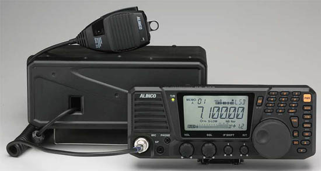
The Alinco DX-SR8T is an all-mode transceiver covering 160 through 10 meters, with 600 memories and even CTCSS for FM operation. It's advertised as a base station radio with mobile capabilities, but at a street price of just over $625 including the separation cable, it's an attractive alternative for operators on a limited budget.
At first blush it would appear to have some quirky features until you think about them. For example, there is no rear panel speaker jack — it's located on the front of the remote head, just below a built-in, front-firing speaker. There's even a separate headphone jack. However, the audio amplifier is rated at just 2 watts, and whether that is adequate for a noisy mobile installation remains to be seen.
The speaker jack doubles as a cloning port, so you can transfer memories from one SR8 to another. It can also be connected to a computer.
For me personally, it has one flaw: the VFO knob is very easy to rotate. There is no adjustable drag, nor does it have a stepped detent like its competitors. It does have an electronic lock for the VFO which may suffice for most users. On a positive note, the remote cable between the head and the main unit is CAT5 — but use the factory-supplied cable, which comes with the mobile mounting package. The modular connector is molded on, and constructed of stranded wire. Remember, solid conductor cable in a mobile scenario is always going to be problematic.
The microphone gain adjustment is internal, requiring the cover to be removed to adjust it. To be honest, this isn't such a bad idea, as microphone gains are typically set-and-forget. There is a speech compressor built in too. It does not have any type of DSP, but it does have an IF shift function. Users might want to add an audio-based DSP speaker.
The adjustable brightness LCD is backlit with black on a very light gray background, making it easy to see in most cases — though it can wash out in direct sunlight. The head is 9.5×4 inches, so the controls are far enough apart even for large fingers. There are back-panel connections for ALC and amplifier keying, but a keying buffer will be required in most cases.
The SR8 isn't a full-featured transceiver, but it is a well-designed 160 through 10 mobile radio. If you don't need 6 meters and above, it's a worthy competitor. And you can't argue about the price.
Alinco DX-SR9T
The DX-SR9T is a slight upgrade to the DX-SR8T. The main difference is what Alinco calls I/Q — best described as a software-defined addition. In a mobile-in-motion scenario, this addition is of questionable use, but for your average gadget-obsessed radio amateur fanatic, it might just fit the bill. It is priced slightly higher than the DX-SR8T.
Elecraft KX3
The Elecraft KX3 is one of the latest miniaturized offerings. It is really designed as a portable, but it has found a mobile following. It's rated at 10 watts PEP, but a 100-watt PEP module (KXPA100 amp) is available. The KX3 has some unique features besides its very small size and light weight (1.6 pounds): advanced DSP with noise reduction, a dual watch feature, a noise blanker, an auto-notch, stereo audio effects, a roofing filter, all-mode operation, and 160 through 6 meter coverage. Pricing starts at $900 without accessories.
The KXPA100 is marketed as a home/mobile amplifier that integrates easily with the KX3. An optional ATU with dual antenna jacks is also available. If you buy the assembled KX3, the KXPA100 with the optional tuner and cabling, the total cost is approximately $2,400 — a bit pricey for most folks.
Icom IC-706
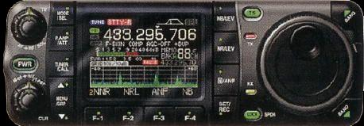
The IC-706 in its various iterations was (and still is) the most popular transceiver ever. After the introduction of the IC-7000, many thought Icom would drop the 706 from its product line. However, it remained so popular that Icom manufactured it in its latest form, the IC-706MkIIg, until March of 2010 when it was finally discontinued. Its approximately $900 price tag, replete with remote mounting kit, was certainly one reason for its popularity. The original model (IC-706 without suffix) doesn't have VHF coverage or DSP.
At this point it should be considered a legacy transceiver. If you find one fully working, don't pay over $125, no matter how clean it looks. Drivers and remote kits for it are nonobtainium, so buyers beware.
It covers 160 meters through 450 MHz (MkII versions), has extended general coverage receive, and supports both FSK and AFSK. One interesting feature with obvious benefits is its separate power output adjustments for HF, 6 meters, 2 meters, and 70 cm bands. It even has a built-in CW keyer. Like many miniaturized radios, it requires an interface buffer to key a power amplifier (except for the SG500 and THP 450HL). The IC-706 has one unique feature: a BFO offset (−200 to +200 Hz), which allows tailoring the transmit frequency to one's voice characteristics.
Icom IC-7000
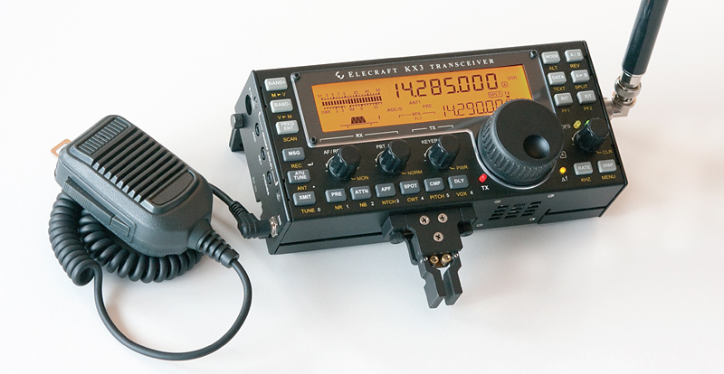
The Icom IC-7000 was discontinued in May 2014. Replacement parts are getting hard to find, and finals for the earlier models are nonobtainium. Yet it remains very popular due to innovations that place it ahead of the competition in many ways. Aside from its advanced IF DSP, Icom did a good job of answering the common complaints about menu selection and button layout. It is slightly smaller in length than the 706, has a color display, a built-in speech synthesizer, and enough memories to keep anyone happy. The street price was $1,299 — a bargain considering its overall capabilities. The remote kit is $110 but is becoming scarce.
The IC-7000 got a bad rap when first introduced for a high-pitched squeal when headsets were used. It was eventually traced to an incorrectly placed grounding clip, apparently occurring when radios were modified to meet FCC rules about not receiving VHF TV stations — a moot point now that all TV stations are digital.
The PTT keying capability of the 7000 is 200 milliamps (the 706 is just 20 mils). While this still requires a buffer interface to key most amplifiers (the SG500 is an exception), it was a step in the right direction.
A very important caveat with the IC-7000 (and older IC-706): make sure the grounding screw for the remote cable is installed. It is very small (2 mm × 6 mm), depicted on page 16, center drawing, Figure 2, in the Owners Manual. Leave it out and you're in for major RFI problems. The port on the rear of the IC-7000 designed to interface with the AH-4 auto coupler is also configured differently than the IC-706 series. Pin 1 (TKEY) input is shared internally with the temperature control circuitry. This pin MUST be left floating. If it isn't, the fan may not come on as required, which can lead to failure of the final transistors.
If you want the best transmit audio out of an IC-7000: set the transmit audio to the Wide position, set the high-frequency rolloff at 2.5 kHz (factory is 2.7 kHz), leave the low-frequency setting at 300 Hz (these settings minimize IMD). Close-talk the microphone (one inch from your lips), and set the microphone gain at about 7% for the average voice. Do not perform microphone mods to increase the low-frequency content — doing so defeats the HM-151's noise-canceling capability, which is the last thing you want in a mobile scenario.
The factory-supplied remote head mounting bracket allows the head to be easily knocked loose. In the center of the bracket is a 1/4×20 threaded boss directly under a small trapezoidal indentation in the head. A short 1/4×20 bolt can secure the head to the mounting bracket permanently.
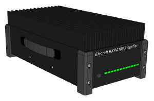
Icom IC-7100
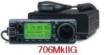
With the demise of the IC-7000, the IC-7100 became Icom's only miniaturized mobile transceiver, despite its shortcomings. The street price hovered around $1,700, which limited its mobile-only appeal when compared to the IC-7000 whose receiver specs are nearly identical. It doesn't have a composite video out either, further eroding its mobile appeal.
Power output is HF 100, VHF 50, UHF 35 watts. The CI-V port address is different, so most IC-7000 accessories won't work with the IC-7100. The NB/AGC loop pumping problem still exists, and there is no roofing filter.
It does have a touch screen and 16 labeled buttons. These buttons mimic and/or duplicate a few various menu items in the 7000 — in some cases handy, in most cases not. The screen has slightly higher resolution than the IC-7000, is a bit larger, but strictly black (gray really) and white. D-Star is standard, hence the higher street price. It has an SD memory card slot usable for recording transmissions and storing memory configuration.
The standby current draw is about half that of the IC-7000, which is a welcomed change. The SWR meter now works even on UHF, and power can be switched on and off remotely, both welcomed additions. There's a USB port with in/out audio and remote control capabilities.
The main unit weighs in at just 2.3 kg (just under 5 pounds), which is part of why one of the optional accessories is a suction cup mount. Be warned: mounting on the dash or windshield is one of the deadly installation sins. Think airbag. Any mounting position that places equipment in the deployment zone of a supplemental restraint system is completely unacceptable.
Icom IC-7200
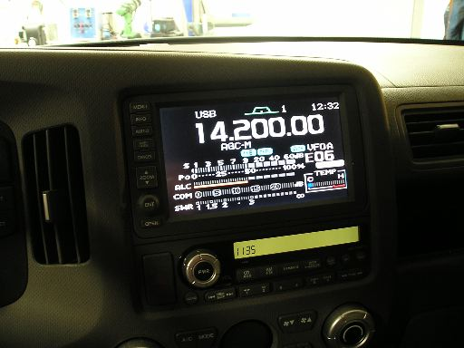
The IC-7200 is a 160 through 6 meter, 100-watt transceiver, but small enough to be used mobile in some larger vehicles. Specification-wise, it is almost identical to the IC-7000 (IF DSP, for example). However, it lacks video out, a color screen, VHF/UHF capabilities, and FM — even on 6 meters.
It has a real PTT relay capable of handling most modern amplifiers (16 VDC, 500 milliamps maximum). Street price hovered around $1,200, and the mobile mounting bracket is about $30.
Contrary to some popular press, the IC-7200 does indeed have a 6 kHz roofing filter. From a personal mobile standpoint, the roofing filter needs to be closer to 3 kHz — perhaps as low as 2.4 kHz — but it is a step in the right direction. It is not waterproof, but it is splash-proof. Unlike the 7000/7100, it uses a standard 8-pin microphone jack and accepts an SM-8 base microphone without an adapter cable.
One interesting feature is a USB port on the rear panel. However, the IC-7200 doesn't have voice or CW memories like the IC-7000. Most antenna controllers designed for the IC-7000 will not work with the IC-7200 as the CI-V addressing is different.
Icom IC-7300

Icom's IC-7300 isn't what most folks would call a mobile transceiver (9.4″×3.7″×9.4″ and 9.3 pounds), although a mobile mount is available. The touch-sensitive 4.3-inch color screen, along with the VFO knob, is used to set most basic parameters. Using it while in motion isn't — shouldn't be — an option. The waterfall display is similar to the one on the IC-7600, and just as clear.
The receiver uses direct conversion technology giving it rather good front-end characteristics. It has 15 separate bandpass filters to cover frequencies from 30 kHz to 74.8 MHz. It even transmits in the 70 MHz band for those countries where it is legal. Obviously, it doesn't have 2 meters and above.
It supports most common Icom accessories like the AH-4 and has a built-in auto-coupler (≤3:1), but in most mobile cases, using one with a screwdriver antenna is fraught with issues. The MSRP is $1,700, with a street price around $1,500 — about the same pricing level as the less-capable Yaesu FT-991, which it directly competes with.
Kenwood TS-480
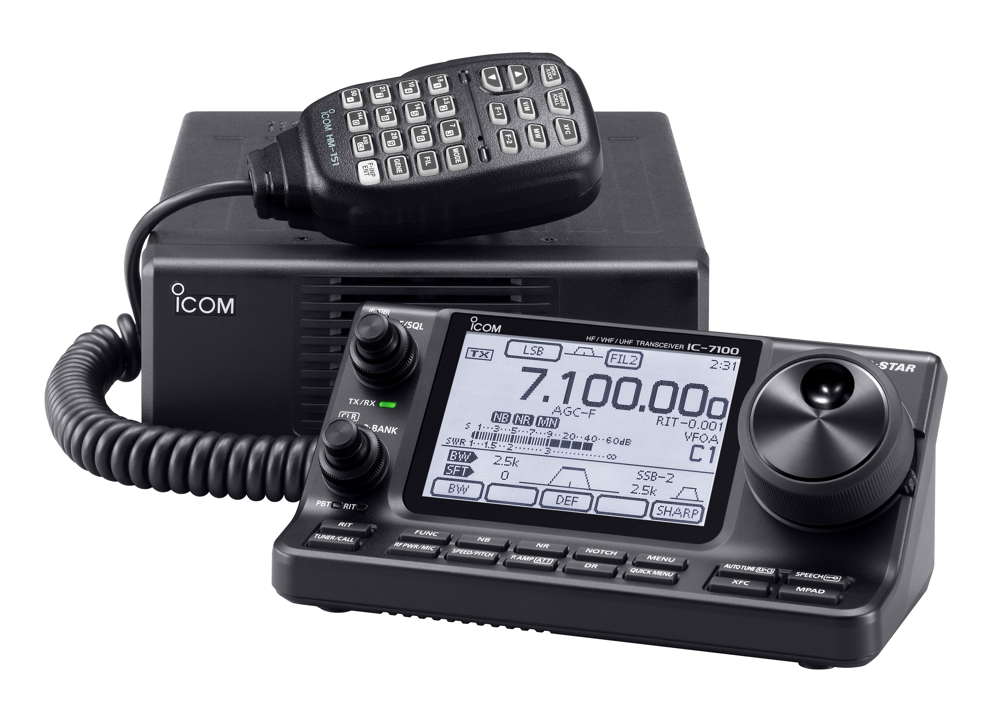
The only real mobile entry from Kenwood is the TS-480. It comes in two iterations: a 100-watt version with a built-in auto-coupler, and a 200-watt version without the coupler. The latter is a poor man's amplifier, as no other made-for-mobile radio offers this much power. The street price for the HX version was originally $1,100, and the SAT version $999.
The head and main body cannot be connected together (remote only), though an after-market bracket is available. As with other Kenwood transceivers, the microphone plugs into the main unit, not the head. The cables (control and microphone) have pre-installed split beads to minimize RFI problems. This brings up a potential problem: the option cable extension kit might be needed in some installations. Use the Kenwood factory cable — not CAT5 substitutes — or you'll be plagued by RFI problems.
Calling it a miniature radio is something of a misnomer. It is approximately 7×2.5×10 inches and weighs just over 8 pounds. Its 16-bit DSP is AF-based, but Kenwood has done a decent job of designing out the problems that have plagued most AF-based DSPs. Optional SSB and CW filters are available. The 1.9 kHz CW filter improves the already decent selectivity ratings compared to other made-for-mobile offerings. However, if you're forced to use the noise blanker, the selectivity advantage disappears.
The optional VGS-1 voice guide and storage unit is worth the $80 it sells for. Like the Icom IC-7000, it reads out all vital settings in the radio, and allows recording up to 90 seconds of audio (3×30 seconds) for CQ and CW messages.
The 200-watt (HX) version requires two power hookups, drawing about 40 amps, so heavy-duty wiring is a necessity. Both versions have two cooling fans, so full-power key-down operation is possible (30-minute limit, 25°C ambient). The main body requires good ventilation clearance on both ends, which might negate some mounting locations, under-seat for example. The HX version gets very warm — hot actually — in normal SSB operation.
One often-expressed virtue of the TS-480 is that it can be had in a SAT version with an internal auto-coupler, leading people to conclude the SAT model is the preferred mobile choice. Like almost all built-in auto-couplers, the maximum matching range is up to a 3:1 SWR. In a mobile scenario, this will about double the bandwidth of a monoband antenna, which in reality isn't much of an improvement on 80 or 40 meters. Further, using one with a remotely-tuned antenna is problematic at best. The HX version at 200 watts PEP makes the need for a mobile amplifier all but moot. The correct mobile choice should be obvious.
Yaesu FT-450D
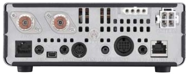
The Yaesu FT-450D is a 160 through 6 meter, 100-watt transceiver. It is a bit large for mobile use (9×3.3×8.5 inches), cannot be remoted, and doesn't have VHF capability. Whether the size and these missing features are a drawback depends on your needs.
It has an excellent IF-based DSP and a 10 kHz bandwidth roofing filter located in the first IF, right after the first mixer. This not only increases selectivity, it improves DSP performance. It has two voice memories, but both are just 10 seconds long, compared to 30 seconds × four for the Icom IC-7000.
Two features are very unique. One is the PTT TOT (time-out timer), a feature every transceiver should have. If you happen to sit on your microphone and key the radio, the TOT will shut down the transmitter after an adjustable period (1 to 20 minutes). The other is an automated CW beacon.
All is not rosy. The microphone gain is menu-selectable LOW, NOR, HIGH, and the latter two automatically turn on the speech processor. There is an internal adjustment (Maintenance Menu), but it is not something you want to play with unless you have the right equipment. The FT-450D also lacks a separate RIT control in the original version — you have to push the RIT button and adjust the receive frequency offset with the main tuning knob.
Unlike the FT-857, the FT-450D has a complete set of CAT commands, making computer interfacing easy. A lot of existing Yaesu after-market accessories that use CAT commands will work with this radio. Street price is about $699. A version with an internal auto-coupler ($770) and a mobile bracket are available.
Yaesu FT-857D
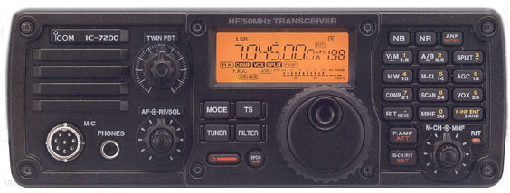
The Yaesu FT-857D certainly has a popular following, in spite of several drawbacks, not the least of which is its 14+ year-old design. The main one is its small, orange-tinged display. Contrary to popular press claims, it isn't any easier to see in daylight than its competitors.
The front-end sensitivity (even in the D model) takes a back seat to every other current offering. In a mobile scenario this fact isn't particularly important, but could be under the right (wrong?) circumstances. The transmit keying line can handle most mobile amplifiers without a keying buffer, which is convenient. However, if you use an auto-coupler or tuning device and an amplifier, you'll have to build your own “Y” adapter cable.
The power cord is actually a dongle with an extension cable and fuses, which might be a drawback if you R&R the radio frequently. The rear panel ports are protected with a 3.5-amp surface-mounted fuse that is not easy to replace and requires special tools. In my opinion, this negates using the ports for screwdriver antenna power.
Yaesu FT-891
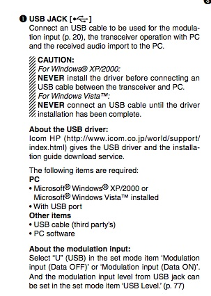
Yaesu's FT-891 is an all-mode, but not all-band mobile transceiver as it only covers 160 through 6 meters. This will garner a lot of sales from folks who already have a VHF transceiver installed in their mobiles.
It sports a large monochrome display, a USB port (usable for remote control), a 3 kHz roofing filter, a 32-bit IF DSP, and supports the optional FC-50 auto-coupler. Street pricing hovers around $750. It is small at just approximately 6×9×2 inches and approximately 7 pounds with the supplied mobile mounting bracket. Like the 857, it is menu-driven. The menu layout is a bit better than its forerunner, but still confusing compared to the competition. Maximum current is 23 amps and power output is 100 watts.
The optional FH-2 remote keypad (approximately $100) allows the operator to access the built-in voice and CW recording features. While this may be of use to base station operators, it is a hindrance to most mobile ones — read that as distracting.
The production units are remotable using the YSK-891 kit. However, the pictorial on page 8 of the Operator's Manual depicts mounting the control head in a very dangerous position, nearly atop the passenger-side airbag. Do not make this mistake. Any mount position that puts the head within the airbag deployment zone is unsafe, period.
Yaesu FT-991
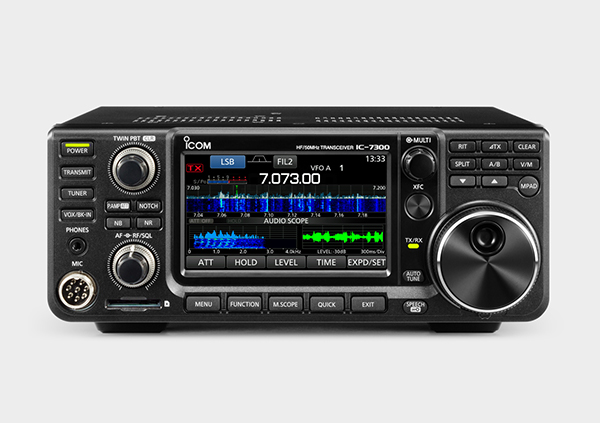
Yaesu's FT-991 is a triple-conversion, all-mode, all-band (no 220 MHz), 100-watt-class (50-watt VHF) transceiver. Measuring approximately 9″×3″×10″ and 10 pounds, it is about the same size as the FT-450D. List price is $1,799. Like the 450, it is not remote-controllable, which limits its mobile appeal. It does have selectable roofing filters (3 kHz and 15 kHz), a spectrum scope, and what Yaesu calls a Parametric Equalizer.
Yaesu describes their Parametric Equalizer as being able to craft “a natural and pleasant sound that you may not have ever experienced before” and enhance “talk power.” Call it what you want, but it isn't much more than a fancy speech processor — and you should avoid it when operating mobile. Thankfully, Yaesu has included a real microphone gain control on the FT-991.
The 3.5-inch color display is easy to read. It has IF-based DSP, and a remote control is available. All popular Yaesu accessories are supported, including the FC40 auto-coupler. No mobile mounting bracket is supplied, but one is available.
One curiosity: the first IF for all bands is 69.450 MHz, which is very close to the 19th harmonic of the color burst frequency of 3.579545 MHz, a popular mobile CPU master oscillator frequency. It remains to be seen if this becomes an issue.
Other Transceivers
There are several others in popular use in legacy form. The Yaesu FT-100D, SGC 2002, Kenwood TS-50, TenTec 555 Scout, and others are in this category. If you're still using one of these transceivers and it's giving you good service, there's probably no reason to upgrade if you're satisfied. However, finals for these transceivers are very scarce and in some cases nonobtainium. If cost is an object (and it should be), when the finals fail, you're much better off junking the radio rather than attempting to repair it. It is, after all, a cost-benefit equation with no clear solution.
Common Problems
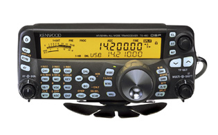
The power handling capability of both the tuner port and the accessory jack of most miniature transceivers is limited. A lot of after-market devices, including some screwdriver controllers, antenna tuners, and digital interfaces, use these ports for power. Icom states you can draw power up to one amp from pin 8 of the accessory jack. Although no specs are published about the current draw from pin 3 of the tuner port, most folks assume up to one amp is acceptable. Don't try to draw more than one amp total for both ports combined.
These ports are fused (3.5-amp SM for the FT-857, 4-amp 3AG for the 706, and 5-amp AGO for the 7000/7100/7200), and all are switched on and off by a switching transistor and/or small relay. If you short either of these ports to ground, there are three failure scenarios. First, the fuse will blow (this doesn't happen often). Second, the switching transistor will fail (usually open). Third, and most likely, a circuit board trace will melt. The latter two failures are costly to repair.
The voltage drop across these ports with a one-amp load is typically 1 volt less than supply voltage. While that might be acceptable for short durations like the tuning cycle of an AH-4, long-term draw means that 1.3 watts or so of heat is being absorbed by the radio's circuitry. If you need the radio to supply switched power to an ancillary device, use a properly buffered relay to do the task — or use a PowerWerx APO3.
Rear panel jacks are often surface-mounted. Even a minor bump can dislodge them from their circuit board. In the case of the 7000, it takes about 2 hours to fix because you have to R&R the main board. Even if you're adept at working on surface-mounted devices, this is a costly repair (about $150). Protect the rear apron from impact, and use angle plugs (90°) rather than straight ones.
The various Icom models, and most other miniature radios, use the same basic module to control power output, SWR fold-back protection, ALC fold-back, and the over-temperature two-speed fan control. When any of these protection functions are active, the metering becomes virtually useless. For example, when the fan is running, the SWR readout is higher than the power output when transmitting into a dummy load. Don't rely on the internal meter for any indication unless the transceiver is dead cold and the output is into a dummy load. Even then, it is suspect.
Some radios don't have an automatic off feature, which can lead to a dead battery. The PowerWerx APO3 solves this problem elegantly. It is more than just a timed (0, 5, 10, 20 minutes) auto-off device. There are four pre-programmed voltage (11.8, 12.1, 12.7, 13.05 volts) settings. Properly programmed, the APO3 will turn your radio off and on by monitoring the battery voltage. It switches 20 amps and can handle up to 30 amps, making it compatible with almost any radio. At $60 MSRP it is also affordable.
What To Do About Heat
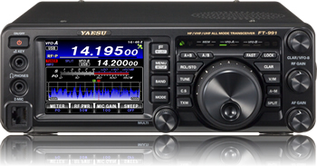
One of the drawbacks to miniaturization is heat dissipation, and it can be a big problem in mobile installations. In all cases there is a heatsink fan. The fan can run during receive and anytime the transceiver is transmitting, increasing power draw by about 1 amp. Too little heat (cold) can cause stability problems in oscillators and in some cases cause LCD failure. Too much heat and the life span of solid-state devices drops sharply, and LCDs will blanch out or fail altogether.
Cooling fans typically run anytime the heatsink exceeds approximately 150°F. If you have the transceiver mounted in the trunk under the package shelf, the heatsink could easily exceed 150°F even when the outside temperature is moderate. If your transceiver doesn't have an automatic off feature, this could cause the fan to turn on, eventually leaving you with a dead battery. An Icom IC-706 draws nearly 5 amps in receive with the fan running, which is about average for any make or model.
Pay attention to your ALC meter reading. Any ALC indication is too much. If it starts to rise off the peg, you're driving it too hard. In either case the transceiver is in a protection mode — this situation causes excessive IMD products to be generated and should be avoided.
Heat rises, so it is always better to mount the main unit under a seat or on the floor of the trunk rather than under a package shelf or where the sun can shine directly on it. Any piece of electronic equipment should be well ventilated. Transceivers shouldn't be mounted directly to a surface — use the factory-supplied mounting bracket to hold the radio away from the mounting surface and allow air to flow freely around it. They shouldn't be mounted vertically either. And forget about adding an external fan.
Mobile amplifiers also get hot. Most are designed to provide a nominal 500 watts PEP output. In order to generate this amount of output power, they input about twice their output (50% efficiency). Depending on the user's speech pattern (average-to-peak ratio), the amplifier's heatsink is dissipating between 125 and 250 watts. Adequate ventilation is an absolute requirement.
Voltage Problems
Almost without exception, every solid-state rig has a low-voltage limit. Under this limit the rig will reset or shut down. For the average Icom, this is 11.6 volts, about nominal for the rest of these small wonders. If the rig is on when you start your vehicle (usually in cold weather), the battery voltage can momentarily drop to 8 volts or less. While the duration isn't very long, it is enough to cause the aforementioned problems.
Over-voltage can be a problem too in vehicles where the battery is located beneath the passenger compartment or in the trunk.
There is another voltage-related issue: voltage in versus power out. At a nominal 13.8 VDC, most of the aforementioned radios will output their rated power. Lower the input voltage to 12 VDC, and none of them will. Driving them harder to make up for this loss is not the solution. This is discussed in detail in the VHF Options article.
Modern Considerations
Alan's original reviews covered the radios of his day, many of which are now out of production. The legacy landscape has shifted considerably since this content was written. Here's what you need to know in 2026.
The Icom IC-705 has become the de facto standard for portable/mobile QRP operation, with a 10-watt output covering 160 meters through 70 cm, a built-in ATU, SDR-based receiver, and integrated GPS. It is a genuinely capable radio for operators not requiring high power. The IC-7300 has also found its way into many mobile installations despite its non-remote-control design, thanks to its exceptional receiver.
Yaesu's FT-991A (revised FT-991) addressed some of the original's quirks and remains in production. The FT-100D, mentioned as a legacy radio in the original text, is well beyond serviceable life expectancy — parts are simply not available.
The fundamentals Alan laid out have not changed: selectivity matters more than sensitivity in a mobile environment; speech compression does more harm than good; impedance matching is non-negotiable; and heat management is critical. Apply these principles to whatever radio you choose, regardless of vintage.
Software-defined radio (SDR) technology has matured to the point where it is now mainstream in mobile transceivers. The Icom IC-7300 and its successors use direct-conversion SDR front ends with hardware DSP, delivering close-in dynamic range that was impossible in analog receivers of comparable price. This is a genuine improvement for mobile use, where close-in interference from nearby signals is a constant challenge.
For operators considering high-power mobile operation, the SGC SG500 referenced throughout this article and the broader K0BG site is a legacy product — Toshiba's discontinuation of the 2SC2279 transistor effectively ended SG500 production. If you find one in good condition, it remains excellent equipment. If you're buying new, research current offerings from Ameritron and others carefully, paying attention to the keying interface requirements for your specific transceiver.